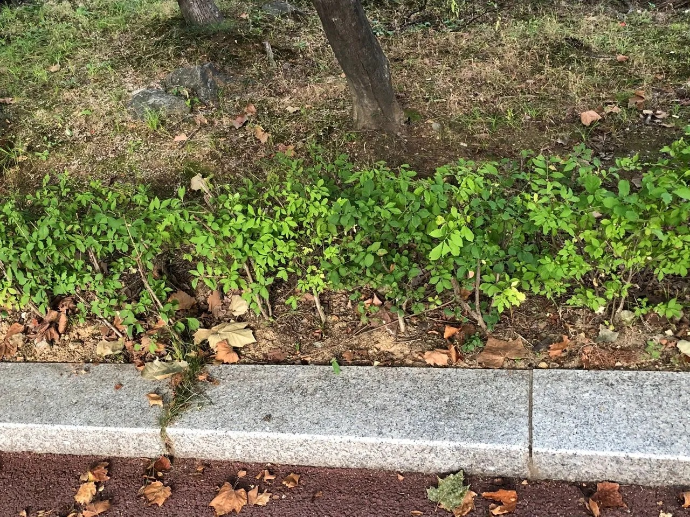

Gallery

Details
- 학명: Euonymus alatus (THUNB.) SIEB.
- 분류: 노박덩굴과 화살나무속
- 형태적 특징:
- 높이: 1~3m까지 자람
- 수형: 부채모양
- 나무껍질: 회색
- 가지: 2~4줄의 코르크질 날개 발달
- 잎 특징:
- 배열: 마주달림
- 모양: 타원형
- 크기: 길이 3~7cm, 폭 1~4cm
- 가장자리: 날카로운 톱니 모양
- 특징: 털이 거의 없음
- 꽃과 열매:
- 개화시기: 5월
- 꽃색: 황록색
- 꽃 배치: 잎겨드랑이에 취산꽃차례로 달림
- 열매: 10~11월에 적색으로 익음
- 생태학적 특징:
- 분포: 동아시아 지역
- 서식지: 전국 산야의 산록 또는 암석지
- 고도: 해발 1,700m 이하
- 특성: 내한성 높고 음지에서도 잘 자람
- 활용:
- 관상용: 부채모양 수형과 아름다운 가을 단풍
- 한방: 가지 날개를 약재로 사용
- 민간요법: 새순을 나물로 섭취, 항암 목적
Location
경기도 부천 원미구 원미동, 원미공원